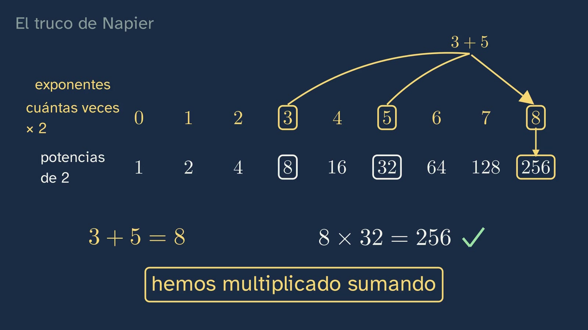
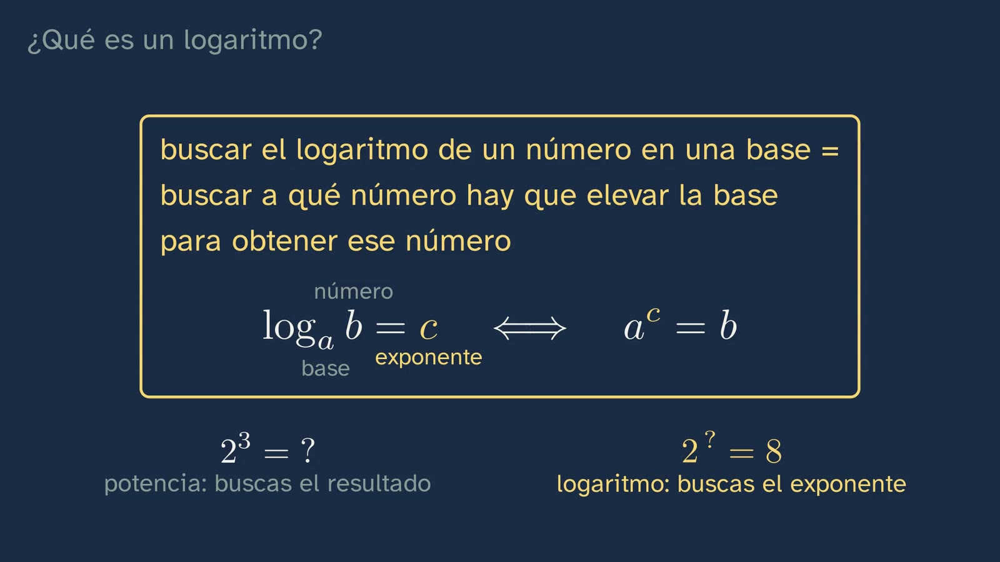
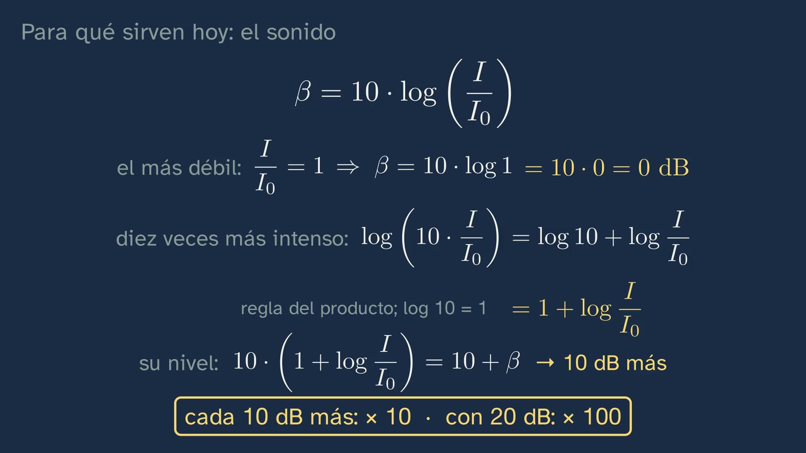

Logaritmos: la potencia al revés
En pocas palabras
La clase pregunta qué es un logaritmo y para qué sirve, y empieza por las matemáticas. Recupera de la clase 4 el intervalo abierto (1, 2) y corrige sus tres ejercicios despejando paso a paso: el valor absoluto se quita por los dos lados y el número pasa sumando a las tres partes. El gancho es el problema de Napier (1614): multiplicar números enormes sin multiplicar, sólo con sumas y restas. Antes de las filas, qué es una base: el número que se multiplica por sí mismo (2³ = 2 · 2 · 2; el exponente cuenta las veces). El dos, por sencillo, genera su fila: sus potencias, todas pares menos el 1 y sin el 6, que lleva un 3; y cada base, la suya. Con las dos filas del dos (arriba, los exponentes; abajo, las potencias), 8 × 32 sale sumando 3 + 5, y contando doses se ve por qué: la regla de las potencias, en su caja. La idea es más antigua que Napier: en 1544, Stifel puso las mismas filas, el mismo ejemplo y, por primera vez, la palabra «exponente». Esos números de arriba son los logaritmos: log₂ 8 = 3. La definición va en su caja, en palabras y en símbolos, como la frase que se repite en toda la clase: buscar el logaritmo de un número en una base es buscar a qué número hay que elevar la base para obtener ese número. La base es positiva y distinta de 1, con su porqué. El truco de las filas, con su nombre: la regla del producto (con su prueba: si x = aᵐ, m = logₐ x) y la del cociente (aᵐ / aⁿ = aᵐ⁻ⁿ), cada una en su caja, y el aviso: la suma no tiene regla (log₂ (4 + 4) = log₂ 8 = 3, pero log₂ 4 + log₂ 4 = 4). De cabeza, siempre con la misma pregunta a la vista: log₂ 32 = 5, cualquier base y el 10 por defecto, logₐ 1 = 0 y logₐ a = 1 en su caja, los números entre 0 y 1, que también tienen logaritmo, uno con hueco (log 0,01 = −2) y uno solo (log₂ 1/8 = −3). El error típico, «log 0 = 0», se desmonta con la recta que se amplía hacia el cero. Para multiplicar cualquier número (3 × 7) hacen falta los logaritmos de todos: log₂ 3 está entre 1 y 2 (con 1 se queda corto; con 2 se pasa). Se calcularon tablas, todas en base 10, dicho y escrito para que la cabeza no se quede en la base 2 (con ellas, 3 × 7 es log 3 + log 7 = log 21), y la regla de cálculo multiplica sumando longitudes (2 × 4 = 8, predicho antes, con cada longitud rotulada donde está). Y al final, en breve, para qué sirven hoy: el nivel del sonido en decibelios, β = 10 · log (I / I₀) (el 10, porque el decibelio es la décima parte del belio). Con las reglas de la clase, el sonido más débil está a 0 dB (log 1 = 0), y uno diez veces más intenso suma log 10 = 1: cada 10 dB más, la intensidad se multiplica por diez. Y se citan, sin más, otras ciencias que usan logaritmos: el pH, el brillo de las estrellas y la altura de las notas. Las reglas de hoy, en una tarjeta, y la pregunta abierta: un sonido diez veces más intenso, ¿lo oyes diez veces más fuerte?
Objetivo. Al terminar, el alumnado sabrá qué es un logaritmo (a qué número hay que elevar la base para obtener el número), calcularlo de cabeza en casos sencillos, usar las reglas del producto y del cociente, y explicar para qué sirve: multiplicar sumando, como quería Napier, y medir lo que va de lo diminuto a lo enorme, como el sonido.
Cómo se rehízo. La clase se rehízo con las notas de Ginés, el responsable del canal. Primero, cada regla en su caja y antes de usarla (ADR-144). Después, el sentido y las aplicaciones como hilo (ADR-145), pero con las matemáticas primero: la aplicación de la física llega al final, cuando ya están las reglas, y se deduce con ellas (ADR-146). Lo que salió del vídeo está en «A fondo», por si sirve en el aula: el concierto de rock, Briggs, Laplace y la prueba de que log₂ 3 no es una fracción. Con las notas al borrador 13 volvieron la página de Stifel y qué es una base, con lo que tiene dentro (ADR-149); la pregunta de repaso va sin contador (ADR-150), y los decibelios se quedan en su fórmula y en lo que dicen de ella las reglas (ADR-151).
Las palabras. «Base» de una potencia: el número que se multiplica por sí mismo; «exponente», cuántas veces (la palabra es de Stifel, 1544). «Logaritmo en base a de b» (logₐ b) es el exponente c con aᶜ = b; se lee «logaritmo en base a de b». «log», sin base, es en este curso y en la calculadora el de base 10 (logaritmo decimal); en la universidad, muchos libros escriben log para el de base e, que aquí se llama ln y llega en el tema 12. «Intensidad» de un sonido: la energía que llega cada segundo a cada metro cuadrado (W/m²). «Nivel de intensidad sonora», β, en decibelios; el belio, la unidad original, es el logaritmo de la razón a secas.
Currículo
Real Decreto 243/2022, Matemáticas I, materia de la modalidad de Ciencias y Tecnología de 1.º de Bachillerato (texto consolidado del BOE; el anexo de Matemáticas no ha cambiado desde 2022). El decreto de Matemáticas I pide las funciones logarítmicas (D.4) sin haber pedido antes el logaritmo, y el de la ESO (Real Decreto 217/2022) no contiene la palabra «logaritmo»: por eso la clase lo construye desde cero. Los minutos son los del vídeo.
| Elemento | Qué dice el decreto | Dónde se trabaja |
|---|---|---|
| Saber básico A.1 (A. Sentido numérico, 1. Sentido de las operaciones) | «Estrategias para operar con números reales y vectores: cálculo mental o escrito en los casos sencillos y con herramientas tecnológicas en los casos más complicados.» | Los logaritmos de cabeza (9:40–12:22); la regla de cálculo como herramienta (15:33); el nivel del sonido (17:59) |
| Saber básico D.4 (D. Sentido algebraico, 4. Relaciones y funciones) | «Propiedades de las distintas clases de funciones, incluyendo, polinómicas, exponenciales, irracionales, racionales sencillas, logarítmicas, trigonométricas y a trozos: comprensión y comparación.» | Lo prepara: sin logaritmo no hay función logarítmica. La función, en el tema 12 |
| Saber básico F.1 (F. Sentido socioafectivo, 1. Creencias, actitudes y emociones) | «Tratamiento del error, individual y colectivo como elemento movilizador de saberes previos adquiridos y generador de oportunidades de aprendizaje en el aula de matemáticas.» | Los dos errores típicos: log 0 = 0 (12:46) y el logaritmo de una suma (9:14) |
| Saber básico F.3 (F. Sentido socioafectivo, 3. Inclusión, respeto y diversidad) | «Valoración de la contribución de las matemáticas y el papel de matemáticos y matemáticas a lo largo de la historia en el avance de la ciencia y la tecnología.» | Napier (2:02), Stifel (5:16) y la regla de cálculo, la herramienta de ingenieros y científicos hasta los años setenta (17:38) |
| Criterio 2.1 | «Comprobar la validez matemática de las posibles soluciones de un problema, utilizando el razonamiento y la argumentación.» | Las soluciones de la clase 4, comprobadas despejando (1:16); 8 × 32 = 256, comprobado (4:08); log 0 = 0, refutado (13:00); la suma, refutada con números (9:14) |
| Criterio 5.1 | «Manifestar una visión matemática integrada, investigando y conectando las diferentes ideas matemáticas.» | Potencias y logaritmos: cada regla de los logaritmos sale de una de las potencias (4:34–8:24); el intervalo (1, 2) de la clase 4, en log₂ 3 (14:54) |
| Competencia 6 | Los vínculos de las matemáticas con otras áreas de conocimiento | El nivel del sonido en decibelios (17:59–19:09): la física, al final y breve, deducida con las reglas de la clase |
| Criterio 6.2 | «Analizar la aportación de las matemáticas al progreso de la humanidad, reflexionando sobre su contribución en la propuesta de soluciones a situaciones complejas y a los retos científicos y tecnológicos que se plantean en la sociedad.» | Los logaritmos como herramienta de cálculo durante más de tres siglos (17:38), y como herramienta de medida hoy (17:59) |
| Criterio 7.1 | «Representar ideas matemáticas, estructurando diferentes razonamientos matemáticos y seleccionando las tecnologías más adecuadas.» | La base y su fila (2:31), las dos filas, la regla de cálculo, que representa los logaritmos como longitudes (15:33), y la fórmula de los decibelios (18:11) |
| Criterio 8.2 | «Reconocer y emplear el lenguaje matemático en diferentes contextos, comunicando la información con precisión y rigor.» | La notación logₐ b, leída (6:04), y la definición, en palabras y en símbolos (6:32) |
| Criterio 9.1 | «Afrontar las situaciones de incertidumbre identificando y gestionando emociones y aceptando y aprendiendo del error como parte del proceso de aprendizaje de las matemáticas.» | Los errores típicos y los retos con pausa |
Competencias específicas 2, 5, 6, 7, 8 y 9. La clase sirve también a Matemáticas Aplicadas a las Ciencias Sociales I, que sí pide la operación: «Potencias, raíces y logaritmos: comprensión y utilización de sus relaciones para simplificar y resolver problemas» (A.3 de esa materia). Y conecta con Física y Química: el nivel de intensidad sonora es contenido de la física de las ondas.
Lo que hay que traer de la ESO (Real Decreto 217/2022). Las potencias y sus reglas (2³ · 2⁵ = 2⁸, 2⁸ / 2³ = 2⁵), que la clase recuerda y justifica contando doses; la notación exponencial de los números grandes y pequeños, que trae los exponentes negativos de las potencias de diez. De las clases anteriores del tema: los intervalos y el valor absoluto (clase 4).
Cómo está construida la clase
Capítulos del vídeo
Veintiún minutos (21:13), en doce capítulos, con un hilo: el logaritmo cuenta cuántas veces se multiplica, y por eso convierte multiplicar en sumar. Primero las matemáticas, y la física al final. Cada regla va en su caja amarilla, con sus palabras y sus símbolos, y se dice despacio antes de usarla; en las explicaciones de detalle, la voz va un 10 % más lenta. La pregunta de la definición está a la vista en todos los ejemplos de cabeza. Tiene dos paradas para pensar (qué dice el descenso hacia el cero, 13:46; cada 10 dB, × 10, deducido, 19:09). Ximena sale a cámara cuatro veces, unos veinte segundos en total: al saludar (0:00), con el gancho (1:51), a mitad (14:11) y al despedirse (21:07).
| Capítulo | Qué pasa | Por qué así |
|---|---|---|
| Qué vamos a ver (0:00) | Ximena saluda. El mapa de las seis clases del tema, con la quinta resaltada, y la pregunta: «¿Qué es un logaritmo y para qué sirve?». | El tema 1 conserva su mapa numerado. |
| Lo que ya sabes (0:15) | ¿Cómo se escriben los números mayores que 1 y menores que 2? Un silencio corto, sin contador. El intervalo abierto (1, 2), con la pregunta a la vista (0:28). | Recuperar antes de oír la respuesta; sin contador, porque es repaso (ADR-150). |
| Las soluciones de la clase anterior (0:36) | |x − 2| ≤ 0,5 → −0,5 ≤ x − 2 ≤ 0,5 → 1,5 ≤ x ≤ 2,5, con √2 fuera y √5 dentro; [−1, 3] es |x − 1| ≤ 2, comprobado despejando (1:16); |x − 1| > 2 → x − 1 > 2 o x − 1 < −2 → (−∞, −1) ∪ (3, +∞) (1:20). | Cada una con su enunciado a la vista y despejada línea a línea, como la haría el alumno (ADR-147); breves: la pizarra escribe cada paso y la voz lo nombra, y a los dos minutos empieza lo de hoy (ADR-148). |
| El truco de Napier (1:51) | El gancho: ¿cómo se multiplica sin multiplicar? El libro de Napier y su promesa (2:02). Qué es una base: 2³ = 2 · 2 · 2 (2:31). El dos, por sencillo, genera su fila: sus potencias, pares menos el 1 y sin el 6; cada base, la suya (3:22). El reto, 8 × 32. Pausa (3:53). Los arcos del 3 y del 5 se juntan en el 8, y debajo, 256 (4:08). Contando doses, la regla de las potencias en su caja (4:34). La misma idea en Stifel, 1544, con la palabra «exponente» (5:16). | El problema antes que la teoría (artículo 15), y matemático: la clase es de matemáticas (ADR-146). Cada palabra, con lo que tiene dentro, antes de usarla, y la historia que da fundamento (ADR-149). |
| ¿Qué es un logaritmo? (6:04) | Los números de arriba son los logaritmos: log₂ 8 = 3, con la notación leída. La definición, en su caja, como la frase que se repite, y en símbolos (6:32). La base, positiva y distinta de 1, con su porqué (7:05). | De lo concreto a la regla, y la regla antes que los ejemplos (ADR-144). La frase, para que se quede (ADR-145). |
| Las reglas: multiplicar sumando (7:30) | El truco, con su nombre: la regla del producto, con su prueba. La del cociente, con aᵐ / aⁿ = aᵐ⁻ⁿ, en las mismas filas (8:24). La suma no tiene regla (9:14). | Cada regla de los logaritmos sale de una de las potencias, y se dice antes de usarla. El segundo error típico, a la vista. |
| Logaritmos de cabeza (9:40) | Con la pregunta a la vista: log₂ 32 = 5. Cualquier base; la más usada, el 10, con la tecla log; log 100 = 2; log 1 = 0 (10:10); logₐ 1 = 0 y logₐ a = 1, en su caja (10:40). Los números entre 0 y 1 también tienen logaritmo: hacia la derecha, × 10 y + 1; hacia la izquierda, lo contrario (11:09). Un hueco: 10^○ = 0,01 (11:37–11:49). Uno sin ayuda: log₂ 1/8. Pausa (12:09). | Un ejemplo entero, otro con hueco y otro solo (artículo 14: ejemplos que se retiran), cada uno con la misma pregunta. |
| El error: el logaritmo de cero (12:46) | Si log 1 = 0, ¿también log 0 = 0? Pausa. 10⁰ = 1; hacia la izquierda, el número se acerca a 0 sin llegar (13:00), con la recta que se amplía en cada paso y sus marcas (0,5; 0,05…), que se renuevan al ampliarse. Para pensar (13:46). Ximena a mitad (14:11). | El error se hace verosímil atándolo a log 1 = 0 (Muller y otros, 2008). |
| Cualquier número (14:23) | Las filas sólo multiplican los números que tienen: para 3 × 7 hacen falta los logaritmos de todos. log₂ 3, con la pregunta de siempre: con 1 se queda corto, con 2 se pasa; está en (1, 2) (14:54). | Responde a por qué hace falta ir más allá de las filas: lo que prometía Napier era multiplicar cualquier número. |
| La regla de cálculo (15:33) | Las tablas, calculadas a mano: 3 × 7 con log 3 + log 7 = log 21. Los logaritmos como longitudes: log 2 ≈ 0,3, log 4 = log 2 + log 2, log 8 ≈ 3 · 0,3. «Ojo: aquí, base 10», a la vista hasta el final de la regla. Dos reglas; ¿qué queda bajo el 4? Pausa (16:42). El 8, con cada longitud rotulada donde está: la verde empieza donde acaba la amarilla, y juntas llegan al 8 (16:57). Una regla de verdad, y en su foto la pieza del medio se desliza hasta que su 1 queda sobre el 2 (17:38). | Responde a una predicción del alumno (artículo 17.3): multiplicar es sumar longitudes. |
| Para qué sirven hoy: el sonido (17:59) | β = 10 · log (I / I₀), con cada letra dicha y el porqué del 10. Con las reglas de hoy: el más débil, a 0 dB, porque log 1 = 0 (18:36); diez veces más intenso suma log 10 = 1, por la regla del producto: cada 10 dB, × 10, y con 20, × 100 (19:09). Otras ciencias, sólo citadas: el pH, el brillo de las estrellas y la altura de las notas (19:18). | La aplicación de la física, después de las reglas y deducida con ellas (ADR-146), y breve: el fundamento y un ejemplo (ADR-151). |
| Para practicar y seguir pensando (19:35) | Las reglas de hoy, en una tarjeta. Tres ejercicios (20:08). La pregunta abierta, con su pausa (20:37). La clase 6 (20:58) y la despedida (21:07). | Las soluciones abren la clase siguiente. |
Puentes con otras materias. Física y Química: el nivel de intensidad sonora (decibelios) y, con la misma idea, el pH. Historia: el cálculo antes de las máquinas.





Plan de una sesión de 50 minutos
Pensado para ver el vídeo en clase, a trozos, con la hoja del alumnado.
| Minutos | Qué se hace |
|---|---|
| 0–5 | Sin vídeo, en parejas: «Antes de ver el vídeo», en la hoja. |
| 5–12 | Vídeo hasta 6:04 (las soluciones, Napier, la base, las filas y Stifel). En el reto de las filas (3:53), un minuto en parejas. |
| 12–20 | Vídeo hasta 9:40. Se para tras la caja de la definición (6:32) para copiar la frase en la hoja, y tras las cajas de las reglas (8:24). |
| 20–27 | Vídeo hasta 14:23: de cabeza, con los huecos (11:37 y 12:09), y el error. |
| 27–33 | Vídeo hasta el final. |
| 33–45 | La actividad de la regla de cálculo de papel o la de los decibelios (abajo), o los ejercicios de la hoja. |
| 45–50 | Puesta en común de la pregunta abierta. |
Errores típicos y cómo se tratan
- «El logaritmo de 0 es 0.» Es el de la clase (12:46). Se desmonta con la definición: haría falta 10^c = 0, y 10⁰ = 1. Hacia la izquierda, cada paso divide entre diez, y un positivo dividido entre diez sigue siendo positivo: se acerca a 0 sin llegar.
- «log (x + y) = log x + log y.» El otro error de la clase (9:14), con las filas del dos: log₂ (4 + 4) = log₂ 8 = 3, pero log₂ 4 + log₂ 4 = 2 + 2 = 4. Con la calculadora, en base 10: log (10 + 10) = log 20 ≈ 1,30, y no 2. La regla es para productos, no para sumas. Una pregunta que ayuda: «¿qué operación se convierte en suma?».
- «De 60 a 120 dB, el doble.» Es el error de leer una escala logarítmica como si sumara. Cada 10 dB multiplica por diez la intensidad (19:09): de 60 a 120, por 10⁶.
- Contar mal las veces. log₂ 32 = 4, por empezar a contar en el 2 en lugar de en el 1. Por eso la clase dice «empieza en el uno» (9:40).
- Leer la notación al revés: «log₂ 8» como «el logaritmo de 2 en base 8». La base va pequeña y abajo, y es la que se eleva (6:04).
- «El logaritmo de un número negativo es negativo.» No existe: una potencia de base positiva siempre es positiva (13:46). Los negativos sí salen como logaritmos, de los números entre 0 y 1 (log 0,01 = −2).
Preguntas y soluciones
Para y piensa (dentro del vídeo)
- ¿Cómo se escriben los números mayores que 1 y menores que 2? (0:15, sin contador) Con el intervalo abierto (1, 2): ni el 1 ni el 2 entran.
- Multiplica 8 por 32 sin multiplicar, usando las dos filas. (3:53) Encima del 8 hay un 3 y encima del 32 un 5; 3 + 5 = 8, y debajo del 8 está el 256.
- ¿A qué número hay que elevar el diez para obtener 0,01? (11:37) A −2: 0,01 = 1/100 = 1 ÷ 10 ÷ 10, dos pasos a la izquierda del 1.
- ¿Cuánto vale log₂ (1/8)? (12:09) −3: 1/8 = 1/2³ = 2⁻³.
- Hay quien dice que log 0 = 0. ¿Qué falla? (12:46) Véase el error 1.
- ¿Qué número quedará debajo del 4 de arriba? (16:42) El 8: la regla de arriba, deslizada log 2, suma log 2 + log 4 = log 8.
Las dos paradas para pensar
- Qué dice el descenso hacia el cero (13:46). Con bases mayores que 1, como 2 o 10, cuanto más cerca de 0 está un número, más negativo es su logaritmo, sin final; y no hay logaritmo de un negativo.
- Cada 10 dB, × 10 (19:09). Diez veces más intenso es multiplicar I / I₀ por 10, y por la regla del producto su logaritmo suma log 10 = 1; con el 10 de delante, 10 dB más. Por eso una escala que suma (los decibelios) mide algo que multiplica (la intensidad). Para comparar dos sonidos cualesquiera, la regla del cociente da β₂ − β₁ = 10 · log (I₂ / I₁) (para el aula; el vídeo no llega ahí). La misma idea, en el pH: cada unidad, diez veces más o menos acidez.
Para practicar (las soluciones abren la clase 6)
- log₃ 81. 4: 3 · 3 · 3 · 3 = 81, contando desde el 1. Lo que saldrá: 3 (por empezar a contar en el 3); 27 (81 ÷ 3).
- Un sonido de 80 dB y otro de 50 dB: ¿cuántas veces más intenso es el primero? Mil veces: 80 − 50 = 30 dB, tres saltos de 10 dB, y cada uno multiplica por diez: 10 · 10 · 10 = 1000 (con la fórmula, 30 = 10 · log (I₁ / I₂), log (I₁ / I₂) = 3 e I₁ / I₂ = 10³). El vídeo hace el de 20 dB (× 100); éste pide un salto más. Lo que saldrá: 30 (restar los decibelios y quedarse ahí); 3 (olvidar deshacer el logaritmo); 300 (sumar tres veces diez en lugar de multiplicar).
- ¿Entre qué dos números enteros está log₂ 10? Escríbelo como un intervalo. Entre 3 y 4, porque 2³ = 8 < 10 < 16 = 2⁴: el intervalo abierto (3, 4). Con la calculadora (clase 6), 3,3219… Criterios: el intervalo bien escrito (clase 4) y la razón con las potencias de 2: con 3 se queda corto, con 4 se pasa.
De la hoja del alumnado
- Antes de ver el vídeo. Ocho veces hasta 256. 2³ · 2⁵ = 2⁸ (ocho doses) y 2⁸ ÷ 2³ = 2⁵ (se quitan tres doses). |x − 3| ≤ 1 → −1 ≤ x − 3 ≤ 1 → 2 ≤ x ≤ 4.
- El logaritmo, con huecos. log₃ 9 = 2 (1 → 3 → 9, dos veces); log₃ (1/9) = −2; log₅ 1 = 0, sin calcular.
- Uno más, con las reglas. log 4 ≈ 0,60; log 8 ≈ 0,90; log 5 = log 10 − log 2 ≈ 0,70 (regla del cociente); log 20 = log 2 + log 10 ≈ 1,30. Con cuatro decimales: 0,6021, 0,9031, 0,6990 y 1,3010.
- Uno más, con sonido. 95 − 85 = 10 dB: diez veces. 105 − 75 = 30 dB: mil veces.
- El reto. log 1024 es la suma de diez log 2 (por la regla del producto), y 1024 ≈ 1000, así que 10 · log 2 ≈ 3 y log 2 ≈ 0,3 (de verdad, 0,30103).
Para seguir pensando. Un sonido diez veces más intenso, ¿lo oyes diez veces más fuerte? La clase la deja abierta. Para el debate: no. Con 10 dB más, la sonoridad que percibimos se duplica más o menos (la escala de sonios, de Stevens), no se multiplica por diez. Que «el oído trabaje con logaritmos» (la ley de Weber-Fechner) es una aproximación discutida: si sale, conviene presentarla como tal. Una pregunta para quien quiera más: ¿por qué crees que el oído no percibe la intensidad tal cual? Si alguien mide la pizarra: la onda diez veces más intensa se dibuja unas tres veces más alta, no diez, porque la intensidad va con el cuadrado de la amplitud (√10 ≈ 3,16).
A fondo
Lo que salió del vídeo, por si sirve en el aula. Del sonido más débil que se oye (10⁻¹² W/m², 0 dB) al de un concierto de rock muy fuerte (1 W/m², 120 dB) hay un billón de veces, y la escala lo deja en 120. Henry Briggs publicó en 1624 los logaritmos decimales de treinta mil números, con catorce decimales, calculados a mano. Laplace escribió que los logaritmos, al reducir a unos días el trabajo de varios meses, «doblan, por así decirlo, la vida de los astrónomos» (Exposition du système du monde, 1798). Y log₂ 3 no es una fracción: si fuera p/q, por la regla del producto el logaritmo de 3^q sería p, así que 3^q = 2^p, y eso es imposible porque la descomposición en primos es única (y, más fácil todavía, uno es impar y el otro par). Con esto se cierra el hilo del tema: los logaritmos necesitan los números reales.
Cómo construyó Napier su tabla. Napier no tabuló potencias de una base, sino los logaritmos de los senos, para la trigonometría y la astronomía. En notación de hoy, su logaritmo de x es, muy aproximadamente, 10⁷ · ln(10⁷ / x). Por eso MacTutor dice que sus logaritmos «are not really to any base», y es un error decir que los neperianos (los de base e) son los de Napier. Su prólogo promete hacerlo todo «per solas additiones, substractiones, bipartitiones, & tripartitiones»: con sumas, restas y divisiones entre dos y entre tres, que son las que necesitan las raíces cuadradas y cúbicas.
log 2 ≈ 0,3, de cabeza. 2¹⁰ = 1024 es casi 1000 = 10³. Por la regla del producto, log 1024 es la suma de diez log 2, así que 10 · log 2 ≈ 3 y log 2 ≈ 0,3. Es el reto de la hoja del alumnado, y una buena entrada a la regla de cálculo de papel.
La regla de cálculo, con sus nombres. Edmund Gunter dibujó en 1620 la escala logarítmica en una regla; William Oughtred juntó dos reglas que se deslizan y las describió en 1632. Hubo una pelea por la prioridad con Richard Delamain (MacTutor, biografía de Oughtred). La voz dice sólo «pocos años después, en Inglaterra».
El decibelio, con más física. β = 10 · log (I / I₀), con I₀ = 10⁻¹² W/m², el umbral de audición a 1000 Hz. El belio, la unidad original (log (I / I₀) a secas, en honor de Alexander Graham Bell), resultaba demasiado grande; el decibelio es su décima parte (UIT-R, Recomendación V.574). Los sonómetros miden en dB(A), con una ponderación que imita la sensibilidad del oído a cada frecuencia; la clase no entra en ello. Tampoco en la salud: si sale en el aula, la OMS (Make Listening Safe, 2015) dice que 100 dB sólo son seguros unos 15 minutos al día.
Dos actividades para el aula
La regla de cálculo de papel (unos 25 minutos, en parejas; trabaja el criterio 7.1 y el cálculo mental). Cada pareja recorta dos tiras de cartulina de unos 12 cm y marca en las dos, con una regla, los números a estas distancias desde el principio (10 cm por unidad de logaritmo):
| Número | 1 | 2 | 3 | 4 | 5 | 6 | 7 | 8 | 9 | 10 |
|---|---|---|---|---|---|---|---|---|---|---|
| Distancia (cm) | 0 | 3,0 | 4,8 | 6,0 | 7,0 | 7,8 | 8,5 | 9,0 | 9,5 | 10 |
- Antes de marcar: ¿por qué el 2 va en 3,0 y el 4 en 6,0? (log 4 = 2 · log 2.) ¿Y por qué el 5 en 7,0? (5 = 10 / 2: regla del cociente.)
- Multiplicad con las tiras 2 × 3, 2 × 4 y 3 × 3. ¿Coincide con lo que sabéis?
- ¿Cómo se dividiría con las dos tiras? (Restando longitudes: 8 ÷ 2.)
Las distancias, redondeadas a milímetros, salen de log 2 = 0,301, log 3 = 0,477, log 4 = 0,602, log 5 = 0,699, log 6 = 0,778, log 7 = 0,845, log 8 = 0,903 y log 9 = 0,954 (comprobados con Python).
Los decibelios del aula (unos 15 minutos). Con una aplicación de sonómetro en el móvil (cualquiera gratuita; la medida es orientativa), cada pareja mide el aula en silencio, una conversación y un aplauso. Después: ¿cuántas veces más intenso es el aplauso que el silencio? (Restar decibelios, dividir entre diez y elevar diez a ese número.) ¿Cuántos decibelios hay que subir para que la intensidad se multiplique por mil?
Recursos abiertos
| Recurso | Qué es | Para qué |
|---|---|---|
| OpenStax, College Physics, 17.3 | El nivel de intensidad sonora, con su tabla de ejemplos (en inglés, licencia libre) | La física de la clase, con más ejemplos |
| Napier, Mirifici logarithmorum canonis descriptio (1614) (Internet Archive) | El libro de Napier, con su prólogo en latín y sus tablas de senos | Ver cómo era de verdad una tabla de logaritmos |
| Stifel, Arithmetica integra (1544) (SLUB Dresde) | El libro entero escaneado; las dos filas, en la hoja 237 (imagen 489) | La fuente original del truco de las filas |
| MacTutor (Universidad de St Andrews) | Biografías de Napier, Stifel, Briggs, Bürgi y Oughtred, en inglés | La historia, con sus fuentes |
| Colección de reglas de cálculo (Smithsonian) | Más de doscientas reglas de cálculo, con sus fichas, en inglés | Ver la variedad de reglas y cuándo se usaron |
Lo que la clase deja fuera, y por qué
La clase tiene una pregunta, qué es un logaritmo y para qué sirve, y lo que no la responde se queda fuera.
- La regla de la potencia y el cambio de base: la clase 6, con la calculadora, y con aplicaciones que despejan el exponente (cuántos pliegues de papel hasta la Luna). Las del producto y el cociente se dan aquí.
- El número e y el logaritmo neperiano (ln): el tema 12, «Las familias de funciones», con la función exponencial.
- La función logarítmica y su gráfica: el tema 12 (saber D.4).
- Qué quiere decir un exponente que no es entero (2^1,58…): empieza en el tema 2, con las raíces (a^(1/n) es la raíz enésima de a); los exponentes irracionales, con los límites.
Fuentes
- Real Decreto 243/2022, anexo II, Matemáticas, texto consolidado (BOE): https://www.boe.es/buscar/act.php?id=BOE-A-2022-5521. La ESO: Real Decreto 217/2022 (BOE): https://www.boe.es/buscar/act.php?id=BOE-A-2022-4975.
- J. Napier, Mirifici logarithmorum canonis descriptio (Edimburgo, Andrew Hart, 1614), «Praefatio», leída en latín en el ejemplar de Internet Archive y cotejada con la traducción inglesa de E. Wright (1616). La traducción al español es del canal.
- OpenStax, College Physics, sección 17.3, «Sound Intensity and Sound Level»: la intensidad, potencia por unidad de área; β = 10 · log (I / I₀), I₀ = 10⁻¹² W/m²; 60 dB, una conversación normal; 120 dB (1 W/m²), un concierto de rock muy fuerte, el umbral del dolor.
- UIT-R, Recomendación V.574-5 (2015): el belio, logaritmo decimal de una razón de potencias, y el decibelio, su décima parte. Organización Mundial de la Salud, Make Listening Safe (2015), sólo para «A fondo».
- La regla de cálculo: MacTutor, biografía de Oughtred; Smithsonian, National Museum of American History, colección de reglas de cálculo.
- Muller, D. A., Sharma, M. D. y Reimann, P. (2008). Raising cognitive load with linear multimedia to promote conceptual change. Science Education, 92(2), 278–296.
- Cada cuenta de esta ficha está comprobada ejecutándola con Python (
verificacion-datos.md, secciones 8, 10, 11 y 12).
Sobre esta clase
GinCol Lab es un canal gratuito de ciencia para curiosos. Ximena es un personaje ilustrado, no una persona real, y su voz es sintética: está generada por ordenador con Microsoft Azure AI Speech y no imita a ninguna persona conocida. La pizarra está animada con Manim. El guion y esta ficha los escribe una IA (Claude, de Anthropic) y los revisa una persona antes de publicarse. Cada dato está comprobado en dos fuentes o en la original, cada cita en su texto y cada cuenta ejecutándola. La portada del libro de Napier y la página de Stifel son de dominio público, y la foto de la regla de cálculo es de Slashme (CC0). Las imágenes de esta ficha salen de la pizarra del propio vídeo. Si ves un error, dínoslo: aprender también es corregir.
Esta ficha se publica con licencia Creative Commons Reconocimiento 4.0: puedes copiarla, adaptarla y usarla en tu aula citando a GinCol Lab.
Cómo citar esta ficha
GinCol Lab (2026). Logaritmos: la potencia al revés. Ficha docente de GinCol Lab: Matemáticas I · 1.º de Bachillerato · Los números reales · Clase 5 de 6. https://gincollab.github.io/aula/matematicas-i/t01-c5/. CC BY 4.0.
Ficha docente de GinCol Lab · CC BY 4.0 · Código fuente y erratas